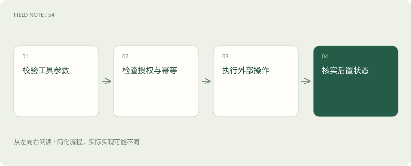

先读哪些知识
先用一个类比理解
像快递单显示已接单，仍需确认地址正确、包裹真正送达。
类比只帮助建立直觉，不等同于技术的完整机制。
一图看懂

概念边界
工具调用包含参数生成、权限检查、外部执行和结果解释。接口返回成功只能说明某一步按协议完成，不能证明操作对象、时间范围或业务目标正确。模型需要检查关键字段与后置状态。
内部怎样运作
查询通常可以安全重试，创建或付款等动作则需要幂等标识与状态核查。超时可能意味着结果未知，而不是执行失败。错误信息应保留可诊断线索，避免模型把失败结果写成成功通知。
把机制放进具体场景
创建工单请求超时后，服务端可能已经创建成功。若立刻再发一次，就可能产生重复工单。使用稳定的幂等标识，或先查询操作结果，再决定是否重试，才能把“未知”逐步变成可确认状态。
取舍与容易忽略的限制
工具边界应同时描述输入约束和结果含义。只告诉模型“能更新订单”不够，还要明确允许变更哪些字段、何时需要额外授权，以及返回状态代表已受理还是已完成。对具有外部副作用的动作，应保留可追踪的操作标识，使后续核对不依赖模型对自然语言成功提示的猜测。
放进真实场景
SCENARIO
查询库存成功后再下单，库存可能已经被其他订单占用。下单工具仍需在服务端重新校验，不能因为前一个查询显示有货就跳过业务检查。
别踩这个误区
工具描述是能力约定，不能代替服务端权限验证和业务校验。
想一想
超时是否可以直接解释为操作没有发生？
不能，超时仅表示未及时获得结果，外部副作用可能已经发生。
关联阅读
资料与边界
本文为原创知识讲解。类比和图示经过简化；示例数字不代表实测或报价。整理日期：2026-11-04。文末列出对应技术的原始资料，具体功能与版本支持请以原文为准。